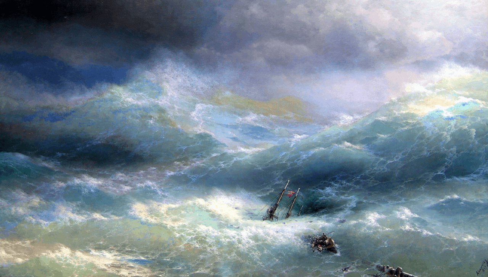
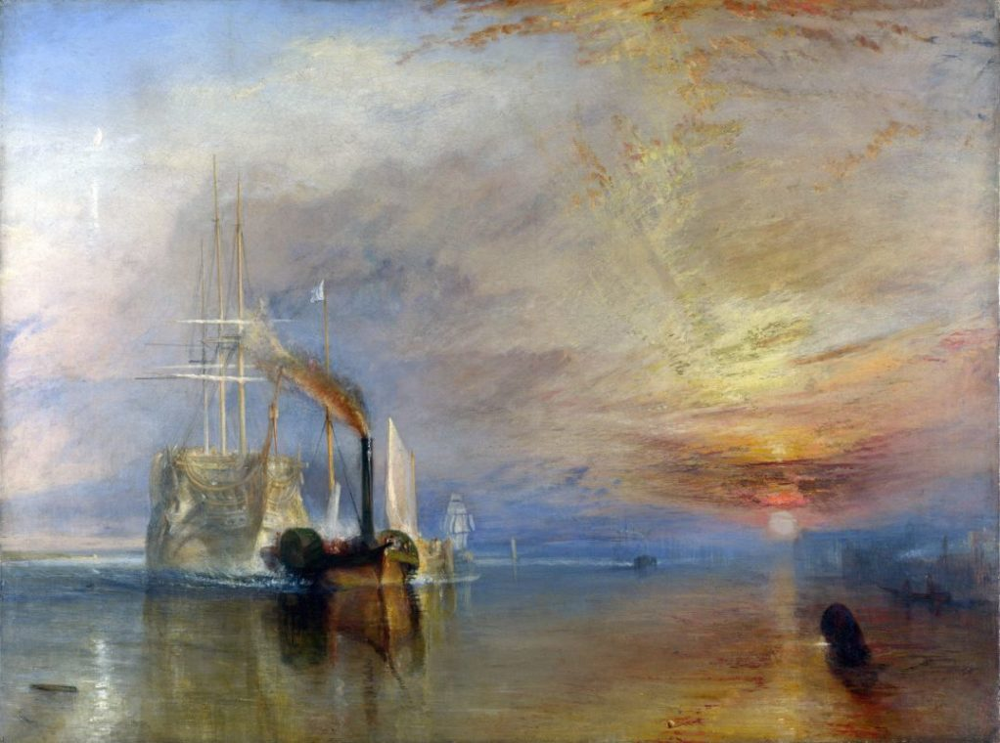
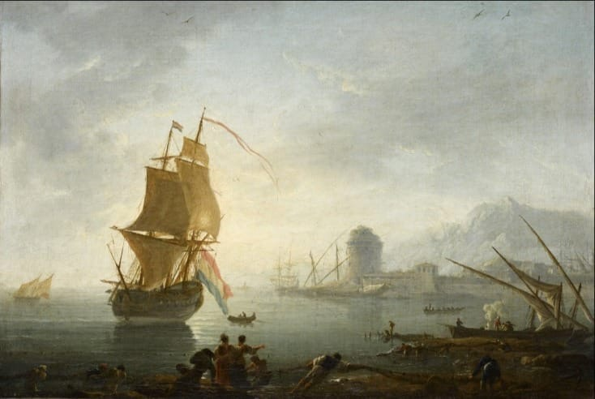

Иван Айвазовский
Создаёт светлые регаты и серии с белыми парусами в аквамариновой гамме.
Открываем мир маринистики: современные художники, картины с историей, выставки, лекции и вдохновение морем.



Создаёт светлые регаты и серии с белыми парусами в аквамариновой гамме.

Писал морские пейзажи, корабли и штормы, передавая силу стихии с помощью света, цвета и движения.

Писал морские пейзажи, виды портов, корабли и бури.
Мы популяризируем маринистику и показываем, что морская живопись может быть современной, эмоциональной и доступной онлайн.
Белый, голубой, синий, аквамарин и песочный — без визуальной перегрузки.
Поиск, фильтры, карточки работ и добавление выбранных картин в корзину.
Резиновая 12-колоночная сетка для смартфонов, планшетов и ПК.
Открытие сезона, встреча с художниками и экскурсия по новой коллекции.
В каталоге появились акварели и графика современных маринистов.
Куратор расскажет о композиции, цвете и передаче движения воды.